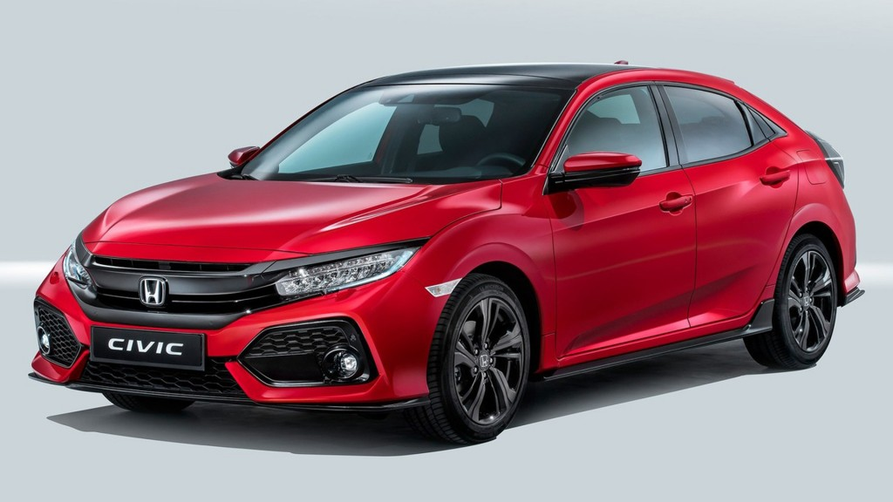
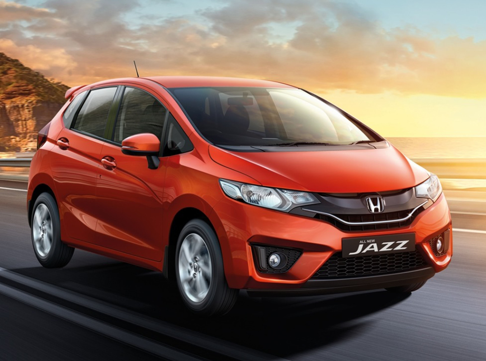
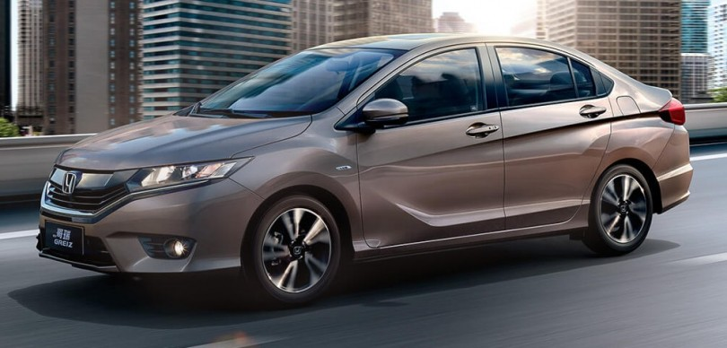

Honda CIVIC
The Civic exemplifies automotive excellence and blends fun with efficiency and practicality. Precise steering, a solid chassis, and a well-tuned suspension provide both a compliant ride and sweet handling. Sedans and coupes get a 158-hp 2.0-liter four or a 174-hp 1.5-liter turbo four paired with a six-speed manual or a CVT. The turbo is standard on the hatchback; a 180-hp Sport version is optional. Interior room is good, but taller drivers may find that the front seats lack thigh support.

Honda- JAZZ
YJazzing up its active-oriented looks is a 1.5L chain-driven in-line 4-cylinder 16-valve engines with i-VTEC. Manning the power is courtesy of a 5-speed manual or 5-speed automatic transmission with sporty paddle-shifters for that extra bit of driving fun. Able to seat four people with ample space for luggage and accessories, the Jazz certainly is a Fit to every Filipino car nut with form and practicality in mind.

Honda City
The current generation Honda City is fighting a losing battle against the Maruti Ciaz. However, Honda plans to fight back with the new 2017 City facelift. This is the first comprehensive facelift for the current-generation Honda City. The new Honda City 2017 continues to rival the likes of Ciaz and Hyundai Verna. As with most mid-life facelifts, the City gets a handful of interior and exterior changes. There aren’t any mechanical updates. However, the new City is not as fuel efficient as before. Read on for all available information on the new Honda City 2017.

Honda-Accord
Accord Sport and Sport Special Edition sedans add 4 horsepower to that total, as well as a host of other features (including 19-inch wheels, bigger brakes, side sills, and a rear lip spoiler) to denote the two trims’ more driver-focused nature. A 278-hp 3.5-liter V-6 is available on the Accord EX-L and standard on the top-of-the-line Touring. While V-6 sedan consumers must give shifting control to a six-speed automatic transmission, EX-L V-6 coupe drivers can choose a six-speed manual transmission.